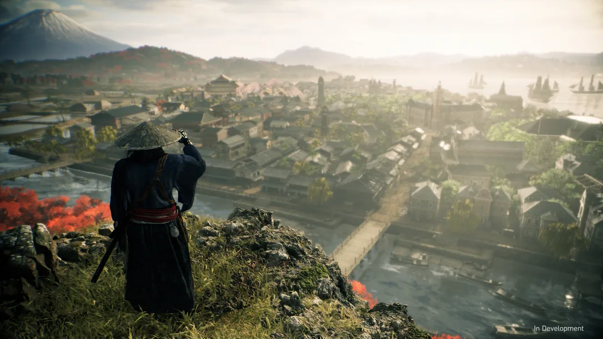
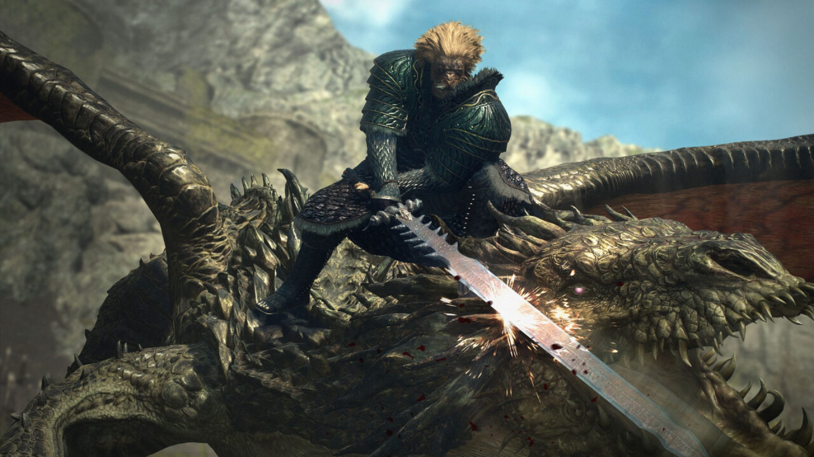
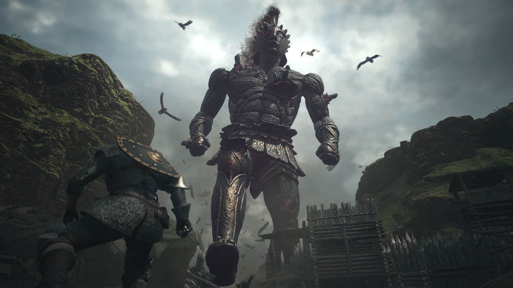
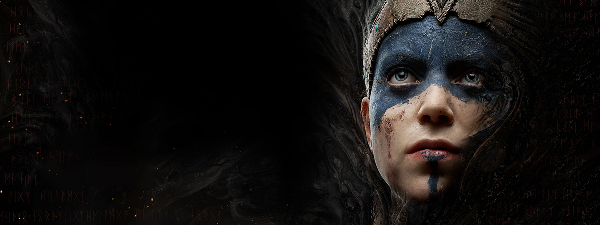

EasyPlay Studios
LaunchGames
Fique por dentro dos proximos lançamentos de jogos
Rise Of The Runin
Semelhante a Ghost Of Tsushima, o jogo aparenta ter uma batalha de espadas muito emocionante, com sons muito fies, como vimos em Sekiro, e com um enorme mundo aberto a ser explorado. Rise Of The Runin, se passa no Japão de 1863, onde após séculos de domínio do xogunato Tokugawa, a chegada de navios ocidentais causa tumulto no país. Em meio à guerra, doenças e agitação política, um guerreiro anônimo, um ronin, surge para forjar seu próprio destino.
 A narrativa dinâmica permite ao jogador escolher seu caminho, influenciando a história com decisões cruciais. Desenvolvido pelos criadores de Nioh e Ninja Gaiden, o jogo oferece combate imersivo e acessível, com diversas opções de armas autênticas da época. Ambientado no período Bakumatsu, o jogo explora a transição entre o Oriente e o Ocidente. A experiência no PlayStation®5 é aprimorada com recursos como resposta tátil, gatilhos adaptáveis e áudio espacial em 3D, proporcionando uma imersão autêntica na recriação detalhada do Japão do século XIX.
A narrativa dinâmica permite ao jogador escolher seu caminho, influenciando a história com decisões cruciais. Desenvolvido pelos criadores de Nioh e Ninja Gaiden, o jogo oferece combate imersivo e acessível, com diversas opções de armas autênticas da época. Ambientado no período Bakumatsu, o jogo explora a transição entre o Oriente e o Ocidente. A experiência no PlayStation®5 é aprimorada com recursos como resposta tátil, gatilhos adaptáveis e áudio espacial em 3D, proporcionando uma imersão autêntica na recriação detalhada do Japão do século XIX.
Data de Lançamento: 22 de março de 2024
Dragon's Dogma 2
Já possuindo uma grande fama pelo primeiro jogo da saga, Dragons' Dogma 2 nos deixa ainda mais empolgados com seu lançamento. A sequência promete um mundo de fantasia explorável e envolvente.
Um RPG de ação para um jogador, oferece uma narrativa movida pela escolha do jogador, desde a criação de personagens até as decisões em situações diversas. Na jornada, jogadores encontrarão Peões, misteriosos seres de outro mundo, proporcionando uma experiência única. A tecnologia avançada de física, inteligência artificial e gráficos modernos são destacados para criar um ambiente imersivo e realista em Dragon's Dogma 2.
Data de lançamento: 21 de março de 2024
Senua’s Saga: Hellblade II
Hellblade 2 ocorre na Islândia do século X, onde Senua, agora em paz com as vozes em sua mente, supera suas visões perturbadoras. O jogo mantém ênfase narrativa, explorando a psicose de Senua. Apesar do aumento na ação e combate em comparação com Hellblade: Senua's Sacrifice, a narrativa continua central.
 Senua não é mais dominada por suas visões, mas elas persistem. O cenário na Islândia do século X promete uma experiência envolvente, enraizada na rica história e mitologia. O jogo explora a jornada de Senua, equilibrando aspectos de ação, narrativa e as complexidades de sua condição psicológica única.
Senua não é mais dominada por suas visões, mas elas persistem. O cenário na Islândia do século X promete uma experiência envolvente, enraizada na rica história e mitologia. O jogo explora a jornada de Senua, equilibrando aspectos de ação, narrativa e as complexidades de sua condição psicológica única.
Data de lançamento: 21 de maio de 2024